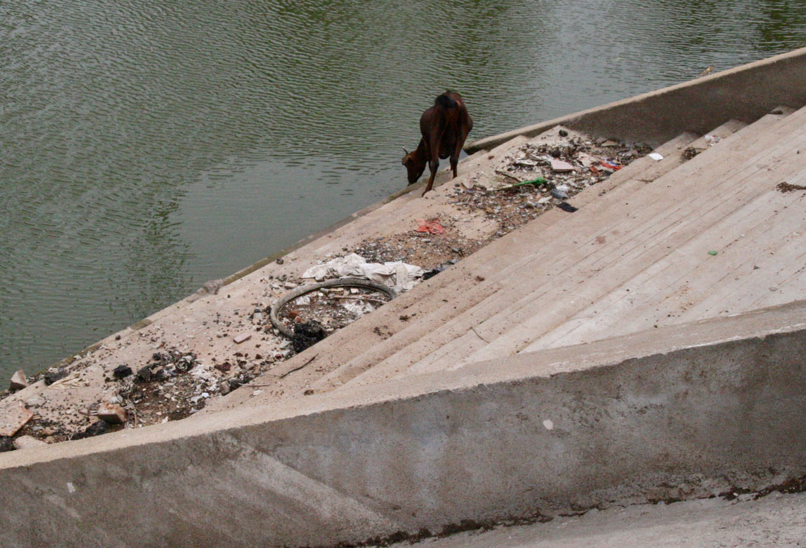
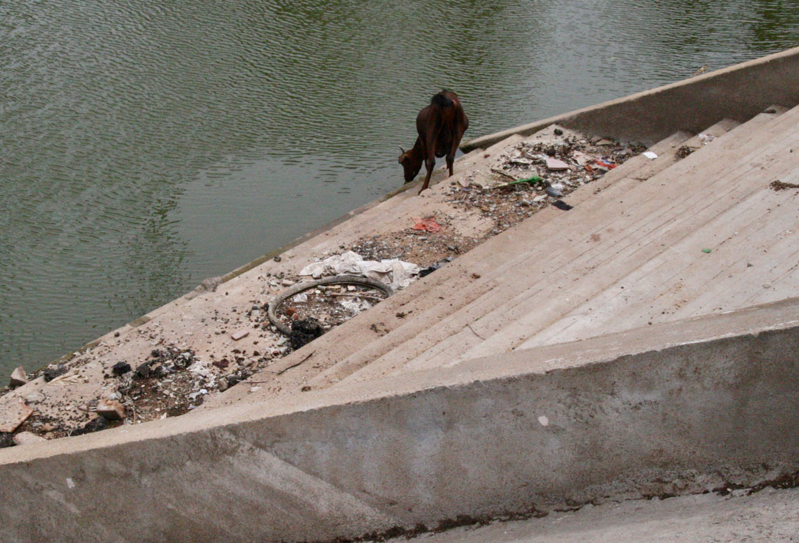
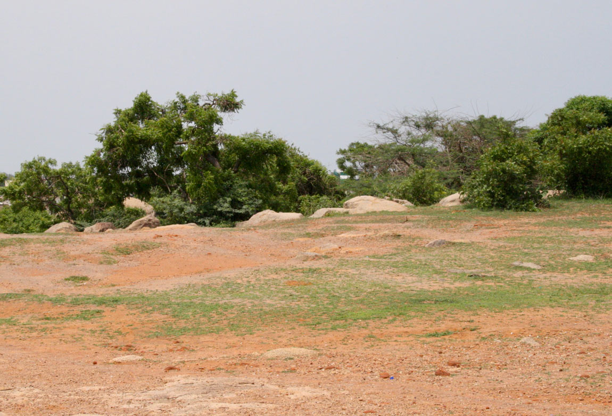
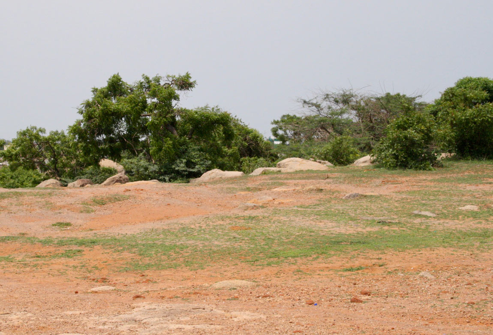
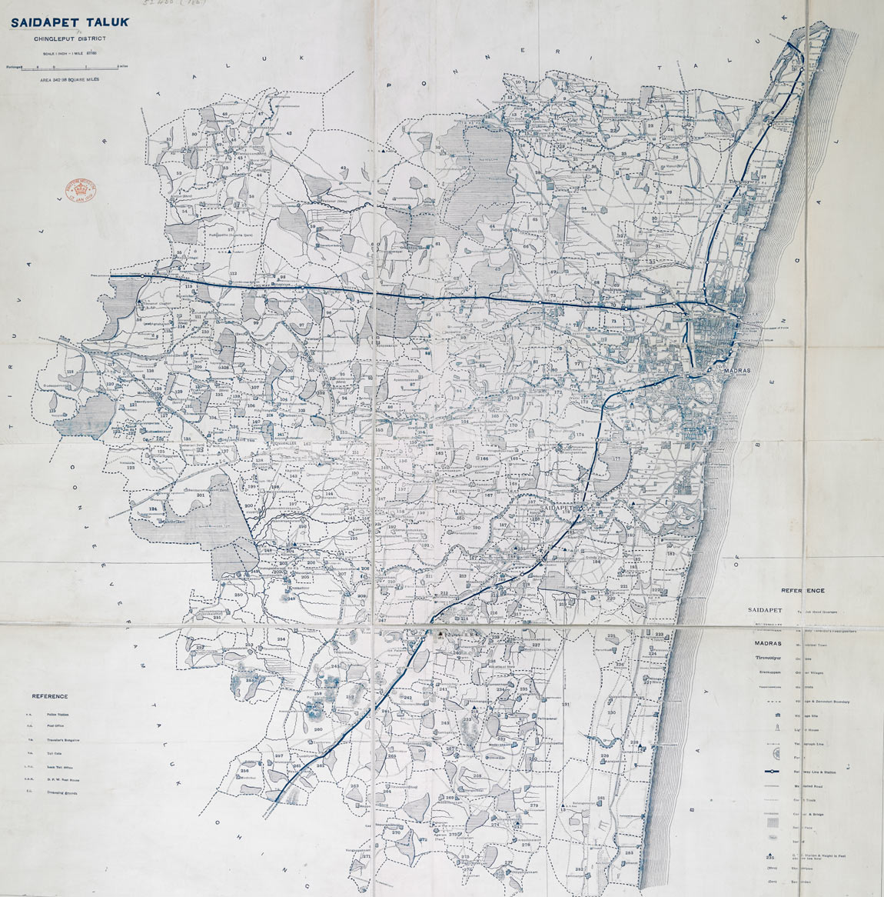
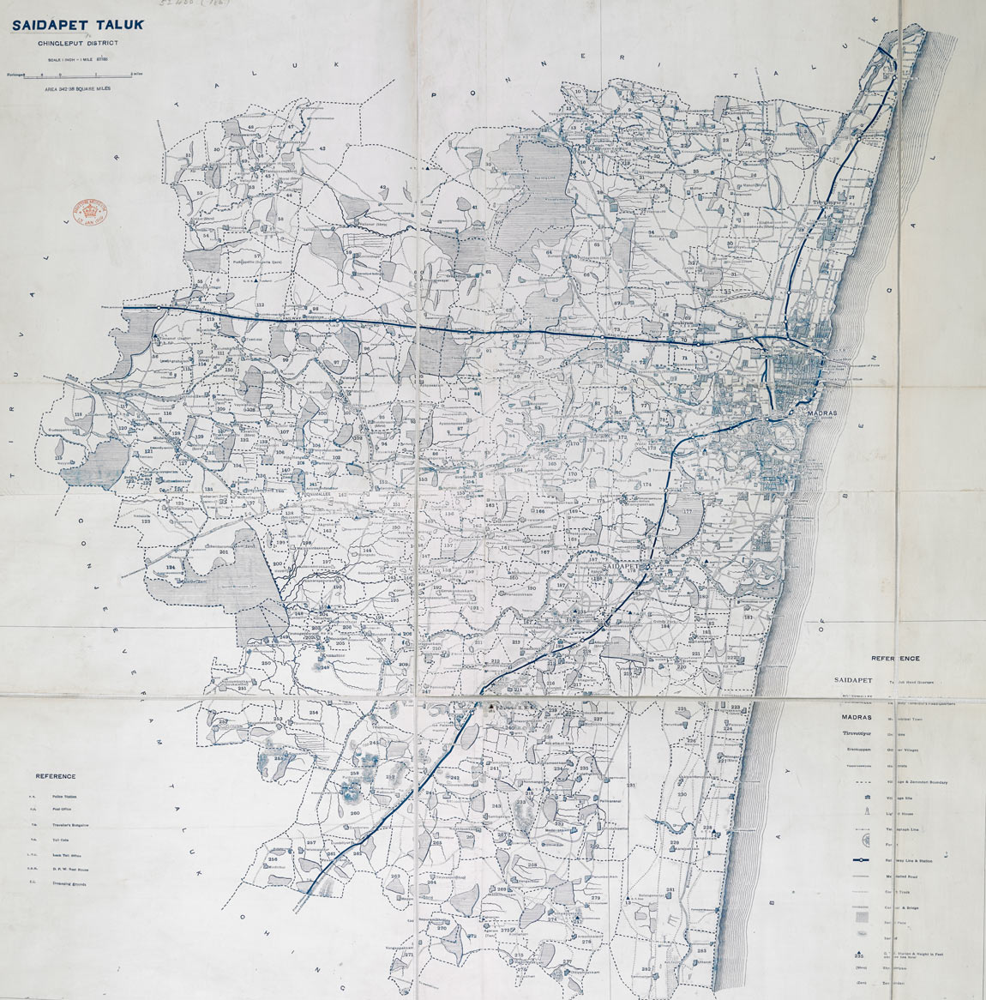
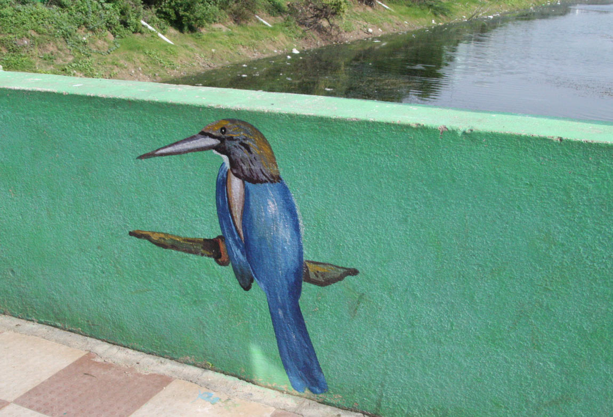
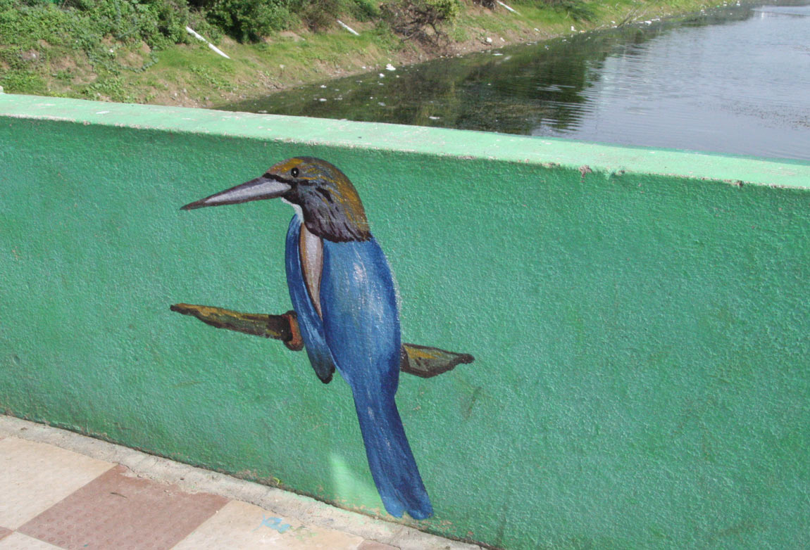

Tanks as meteorological
infrastructure
South Indian tanks, known as eris in Tamil, are ancient earthworks designed to harvest monsoon rainwater. These agentive socio-natural structures have mediated relations between people and the monsoon since medieval times.
 

Precolonial origins
Tanks were an emergent response to the landscape and weather of the Tamil Nadu coastal plains. The landscape is hot and dry, characterised by scant rainfall, high temperatures and thorny vegetation. Due to the aridity of the region, early South Indian kingdoms relied on the effective control of water. Tanks were designed to capture and store seasonal flows of monsoon rainwater. Approximately 39,000 interconnected tanks were constructed over centuries, radically altering the regional landscape and its hydrology.
 


Tanks and the monsoon
Tamil Nadu lies in the rain shadow of the Western Ghats, a chain of mountains which block rainfall from the southwest monsoon from reaching it. Tanks were created to store rain brought by the northeast monsoon. Construction of eris proliferated during the Medieval Climate Anomaly (ca. 850-1300), which saw an increase in northeast monsoon rainfall. The curved earthen embankments encouraged rainwater to percolate, soak and seep into the ground, retaining the monsoon within the landscape and extending its presence for longer.


Write Caption: Sed ut perspiciatis unde omnis iste natus error sit voluptatem accusantium doloremque laudantium, totam rem aperiam, eaque ipsa quae ab illo inventore veritatis et

Meteorological assemblages
By promoting a moisture-laden atmosphere, tanks altered the regional climate. Tank infrastructures influenced humidity and air flow, cooling ambient temperatures and inducing localised rainfall. Each tank created a microclimate and their accumulated effects altered the broader macroclimate of the region. By leveraging the monsoon, tank infrastructures enabled wet paddy rice cultivation which prompted dramatic population growth and the emergence of cities, towns and temples.


Write Caption: Sed ut perspiciatis unde omnis iste natus error sit voluptatem accusantium doloremque laudantium, totam rem aperiam, eaque ipsa quae ab illo inventore veritatis et

Urban transitions
Over time, tanks transitioned into new socio-political arrangements. Madras (Chennai) emerged on the northeast monsoon dominated coast of Tamil Nadu in the seventeenth century. Colonial accounts from the 1800s describe its landscape as comprised of an abundance of tanks. During the course of urban expansion many tanks were filled in or encroached on to create land for buildings and infrastructure.
 



Write Caption: Sed ut perspiciatis unde omnis iste natus error sit voluptatem accusantium doloremque laudantium, totam rem aperiam, eaque ipsa quae ab illo inventore veritatis et
Urban tank ecologies
Despite being part of highly urbanised landscapes, tanks foster a diversity of human and nonhuman life. Tanks offer opportunity space for the marginalised and those with precarious livelihoods. They provide habitat for fish to breed and nurse, and host native and migratory birds whose movements respond to changing weather patterns. Their earthen embankments provide niches for plants, trees and medicinal herbs that once formed part of agricultural systems. Tank ecologies reveal complex webs of interconnection across time and space.


Tank transformations
Chennai’s remaining tanks are undergoing radical transformation as part of restoration and beautification initiatives. Environmentalists are concerned that tanks are being redesigned as ‘tubs’ or ‘buckets’ for compounding or containing water. This reconceptualisation is influenced by the prevalence of a ‘blue water bias’ that prioritises surface water. Such understandings contrast markedly with older conceptions of tanks as ‘rain infrastructure’ that encourage many forms of wetness, including wetness in the soil and in the air.
 



Write Caption: Sed ut perspiciatis unde omnis iste natus error sit voluptatem accusantium doloremque laudantium, totam rem aperiam, eaque ipsa quae ab illo inventore veritatis et